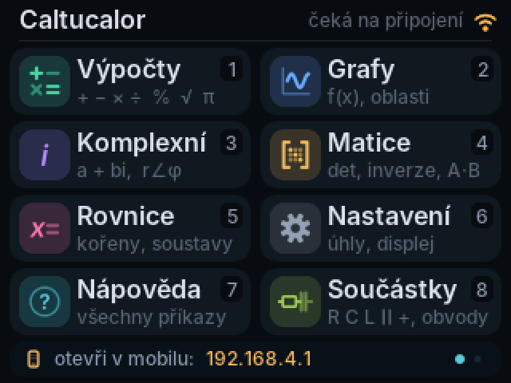
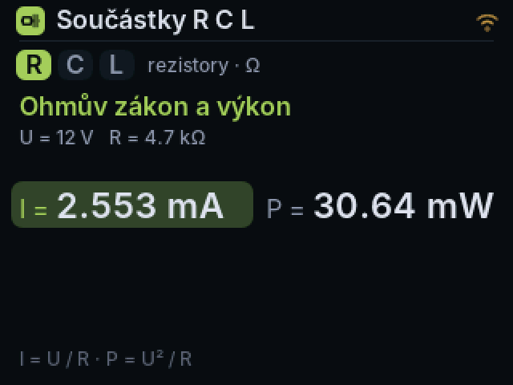

Caltucalor
verze 6.3
Program do kalkulačky přímo z prohlížeče
Připoj kalkulačku USB-C kabelem k počítači, vyber desku a klikni na Nainstalovat. Nic se neinstaluje, stačí Chrome nebo Edge.
- uložené grafy zůstanou
- asi minuta
- ESP32-S3

Instalace verze 6.3
Když už v kalkulačce Caltucalor je, tohle ji jen aktualizuje. Co je nového, najdeš v historii aktualizací.
1
Deska
Displej: ST7789 240 × 320 (SPI), zapojený podle návodu k projektu.
2
Připoj kalkulačku a nainstaluj
Vybráno: XIAO ESP32S3 · displej ST7789
Zavři napřed Serial Monitor v PlatformIO a jiné programy, které můžou mít port otevřený.
Co se bude dít
- Prohlížeč se zeptá na port – vyber ten s kalkulačkou (třeba USB JTAG/serial debug unit nebo COM…) a dej Připojit.
- V okně (je anglicky) klikni na Install Caltucalor.
- Erase device nech nezaškrtnuté – uložené grafy, Wi-Fi a nastavení zůstanou. Zaškrtni jen, když chceš úplně čistou kalkulačku.
- Next → Install. Nahrávání trvá asi minutu, pak se kalkulačka sama restartuje.
- Číslo verze je v kalkulačce v Nastavení vpravo dole (nebo příkaz
verze).
Když to nejde
- Port se neukáže: zkus jiný kabel (některé jen nabíjejí) nebo jiný USB port.
- XIAO nereaguje: podrž na desce BOOT, krátce zmáčkni RESET, pusť BOOT a klikni na Nainstalovat znovu. Po nahrání zmáčkni RESET.
- Barvy jsou jako negativ: pošli z mobilu příkaz
invert– kalkulačka si to zapamatuje. - Port je obsazený: zavři Serial Monitor, Arduino IDE nebo druhou kartu s touhle stránkou.
Wi-Fi a klávesnice v mobilu
- Po zapnutí si kalkulačka hned udělá vlastní Wi-Fi Caltucalor (heslo
kalkulacka). K žádné jiné síti se nepřipojuje. - Připoj se k ní mobilem a otevři http://192.168.4.1 – adresa je i na displeji. Stránka se někdy otevře sama („Přihlásit se k síti“).
- Když se stránka nenačte, vypni v mobilu mobilní data. Když mobil hlásí, že síť nemá internet, potvrď „Zůstat připojeno“.
Co umí
- výpočty se zlomky, komplexní čísla, matice, rovnice
- grafy (i s časem, polární, implicitní), derivace, integrály
- součástky R C L a obvody, soustavy BIN / HEX
- klávesnice v mobilu přes Wi-Fi



Historie aktualizací
- 6.3Malá aktualizaceVlastní Wi-Fi hned po zapnutíaktuální
- Kalkulačka se už k žádné síti nepřipojuje a hned po zapnutí udělá vlastní Wi-Fi Caltucalor – klávesnice v mobilu je na 192.168.4.1.
- Instalace a aktualizace přímo z téhle stránky (Chrome nebo Edge, USB kabel).
- 6.2Malá aktualizaceÚprava a mazání grafů na stránce Čas
- Na stránce Čas je dole graf s vybranou proměnnou (t, u, v, w): ťuknutí nebo tužka = upravit, × = smazat (napřed se zeptá).
- Číslo verze a datum překladu v Nastavení, příkaz „verze“.
- 6.1Malá aktualizaceMenu na dvě strany
- Druhá strana menu: Matematika, Obvody, Proměnné, Soustavy, Uložené grafy a Novinky.
- Úprava křivky z Historie ji přepíše a stará verze zmizí; × smaže jen jednu křivku (i u uloženého grafu).
- Rychlejší grafy bez ztráty kvality – přidání nebo smazání křivky už nepočítá znovu ty ostatní.
- 6verzeVelká aktualizace
Matematika a obvody
- Faktoriál, kombinace a variace, statistika (průměr, medián, směrodatná odchylka), derivace a integrál, vlastní proměnné.
- Obvody: Ohmův zákon a výkon, dělič napětí, rezistor k LED, RC, RL a LC články, reaktance a hledání kombinací z řady E24.
- Grafy: tečna a směrnice ve stopě, plocha pod křivkou, maximum a minimum, polární grafy r(t).
- Doladěný vzhled a kontrola celé kalkulačky (testy, opravy nalezených chyb).
- 5.11Malá aktualizaceDeska XIAO ESP32S3
- Verze pro malou desku Seeed XIAO ESP32S3 (místo starší verze s Bluetooth), ztlumení podsvícení přes pin D0.
- 5.10Malá aktualizaceZlomky v grafech
- Zlomky na patra jdou psát i do vzorců grafů.
- 5.9Malá aktualizaceSoučástky R, C, L
- Nový režim Součástky: rezistory, kondenzátory a cívky sériově i paralelně, se schématem na displeji.
- 5.8Malá aktualizaceUložené grafy
- Grafy jde uložit a zůstanou i po vypnutí; obrazovka Uložené grafy a záložka v klávesnici.
- 5.7Malá aktualizaceBaterie
- Stav baterie a napájení z USB v liště nahoře.
- 5.6Malá aktualizacePsaní v soustavách
- Po přepnutí na HEX nebo BIN se čísla píšou rovnou v té soustavě, převod ťuknutím na jinou soustavu.
- 5.5Malá aktualizaceProměnné u, v, w a soustavy
- Proměnné u, v, w v čase, každá s vlastní rychlostí a rozsahem.
- Soustavy HEX, BIN, OCT a bitové operace (and, or, xor, not, posuny).
- Přerušení dlouhého výpočtu klávesou AC, zatížení procesoru v liště a rychlejší grafy (obě jádra).
- 5.4Malá aktualizacePřesné zlomky
- Výsledek jako přesný zlomek i smíšené číslo, přepínání zlomek ⇔ desetinné číslo, psaní zlomku na patra.
- 5.3Malá aktualizaceOprava grafů
- Implicitní grafy bez děr a výpadků (např. tan(x)·y = 5) a lepší husté oblasti.
- 5.2Malá aktualizaceČas t a Historie
- Animace grafů s časem t: spustit, pauza, rychlost, rozsah, postupné kreslení parametrických křivek.
- Historie vzorců – starý vzorec znovu bez psaní; podržení ◀ ▶ ⌫ opakuje.
- 5.1Malá aktualizaceOprava displeje
- Displej bez pinu podsvícení po vypnutí nesvítí bíle, ale zůstane černý v úsporném režimu.
- 5verzeVelká aktualizace
Klávesnice v mobilu
- Kalkulačka se ovládá klávesnicí na webové stránce v mobilu přes Wi-Fi – kreslí ji přímo ESP, stejně jako bude na dotykovém displeji (místo Bluetooth).
- Psaný řádek s kurzorem a náhledem výsledku dole na displeji.
- Parametrické grafy x(t), y(t) a mocniny funkcí jako sin³(t).
- Každý režim má svou hlavní stránku klávesnice, exponent se píše nahoru, bez automatických závorek.
- 4.2Malá aktualizaceNové zadávání matic
- Matice se píšou po řádcích do mřížky, přehled všech matic, rychlé akce číslem a úprava jednoho prvku.
- 4.1Malá aktualizaceIkony
- Každý režim má ikonu v menu i v liště nahoře; menu jako seznam nebo mřížka.
- 4verzeVelká aktualizace
Režimy
- Menu po zapnutí s režimy Výpočty, Grafy, Komplexní čísla, Matice, Rovnice, Nastavení a Nápověda.
- Komplexní čísla, matice A–D, rovnice se všemi kořeny a soustavy lineárních rovnic.
- Víc grafů najednou, zoom, posun, hodnota v bodě, kořeny a průsečíky.
- Vlastní ovladač displeje s DMA na 80 MHz, kreslení na druhém jádře, úspora energie a nastavení, která se pamatují.
- 3verzeVelká aktualizace
Nový vzhled
- Nové GUI s vyhlazeným písmem s háčky, karta s výsledkem, symboly √ π × a čísla po trojicích.
- Animace: úvodní logo, posun historie, zatřesení při chybě, odkrývání grafu.
- Grafy funkcí po sloupcích pixelů, operátor % (modulo), maximální výkon procesoru a displeje.
- 2verzeVelká aktualizace
Grafy
- Grafy funkcí i vztahů x a y (kružnice, nerovnice, oblasti) a vlastní rozsah grafu.
- Opravy výpočtů oproti původní kalkulačce (mocniny, záporná čísla, velká čísla), znaky √ π ² z mobilu.
- Tmavší vzhled, nápověda na displeji a příkaz invert pro displeje s obrácenými barvami.
- 1verzeVelká aktualizace
První verze
- Kalkulačka Caltucalor z PC přepsaná tak, aby běžela přímo na ESP32-S3 s barevným displejem.
- Příklady se posílají z mobilu přes Bluetooth nebo z počítače přes USB, výsledek se ukáže na displeji.
- Výsledky ověřené proti původní kalkulačce.